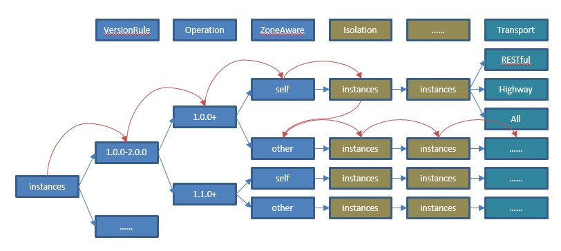

负载均衡
场景描述
ServiceComb提供了非常强大的负载均衡能力。它的核心包括两部分，第一部分是DiscoveryTree，通过将微服务实例根据接口兼容性、数据中心、实例状态等分组，DiscoveryFilter是其主要组成部分；第二部分是基于Ribbon的负载均衡方案，支持随机、顺序、基于响应时间的权值等多种负载均衡路由策略IRule，以及可以支持Invocation状态的ServerListFilterExt。
DiscoveryTree的逻辑比较复杂，可以通过下面的处理流程了解其处理过程。 
负载均衡适用于Consumer处理链，名称为loadbalance，示例如下：
servicecomb:
handler:
chain:
Consumer:
default: loadbalance
POM依赖：
<dependency>
<groupId>org.apache.servicecomb</groupId>
<artifactId>handler-loadbalance</artifactId>
</dependency>
按照数据中心信息进行路由转发
服务提供者和消费者都可以通过在microservice.yaml中声明自己的服务中心信息：
servicecomb:
datacenter:
name: mydatacenter
region: my-Region
availableZone: my-Zone
消费者通过比较自己的数据中心信息和提供者的信息，优先将请求转发到region和availableZone都相同的实例；如果不存在，则转发到region相同的实例；如果仍然不存在，则转发到其他实例。
这里的region和availableZone是一般性的概念，用户可以自行确定其业务含义以便应用于资源隔离的场景中。可以参见微服务实例之间的逻辑隔离关系，了解更多其他实例发现相关的隔离机制。
该规则默认启用，如果不需要使用，可以通过servicecomb.loadbalance.filter.zoneaware.enabled进行关闭。数据中心信息隔离功能在ZoneAwareDiscoveryFilter实现。
根据实例属性进行路由转发
微服务可以指定实例的属性。实例属性可以在microservice.yaml中指定，也可以通过服务中心的API进行修改。
instance_description:
properties:
tags:
tag_key: tag_value
消费者可以指定消费具备某些属性的实例，不访问其他实例
servicecomb:
loadbalance:
provider: # 这里表示配置对名为"provider"的服务生效，如果是跨应用调用，则还需要加上AppID，如"AppIDOfProvider:provider"
transactionControl:
options:
tags:
tag_key: expected_tag_value
上面的配置表示只访问myservice所有实例中tag_key属性为expected_tag_value的实例。
该规则需要给每个服务单独配置，未配置表示不启用该规则，不支持对于所有服务的全局配置。
该规则默认启用，如果不需要使用，可以通过servicecomb.loadbalance.filter.instanceProperty.enabled进行关闭。根据实例属性进行路由转发功能在InstancePropertyDiscoveryFilter实现。
实例隔离功能
开发者可以配置实例隔离的参数，以暂时屏蔽对于错误实例的访问，提升系统可靠性和性能。下面是其配置项和缺省值
servicecomb:
loadbalance:
isolation:
enabled: true
errorThresholdPercentage: 0
enableRequestThreshold: 5
singleTestTime: 60000
continuousFailureThreshold: 5
隔离的统计周期是1分钟。按照上面的配置，在1分钟内，如果请求总数大于5，并且连续错误超过2次，那么就会将实例隔离。 错误率默认值为0，表示不启用，可通过配置100以内的整数来启用，例如配置为20，则表示，在1分钟内，如果请求总数大于5，并且[1]错误率大于20%或者[2]连续错误超过2次，那么就会将实例隔离。 实例隔离的时间是60秒，60秒后会尝试启用实例（还需要根据负载均衡策略确定是否选中）。
注意事项：
- 当错误率达到设定值导致实例隔离后，要想恢复，需要等待隔离时间窗结束后的第一次成功请求进行周期性累加，直到总的错误率下降到设定值以下才行。由于请求总数是触发实例隔离的门槛，若请求总数达到设定值时计算出来的错误率远大于设定值，要想恢复是需要很久的。
- ServiceComb为了检测实例状态，在后台启动类一个线程，每隔10秒检测一次实例状态（如果实例在10秒内有被访问，则不检测），如果检测失败，每次检测会将错误计数加1。这里的计数，也会影响实例隔离。
系统缺省的实例状态检测机制是发送一个telnet指令，参考SimpleMicroserviceInstancePing的实现。如果业务需要覆盖状态检测机制，可以通过如下两个步骤完成：
- 实现MicroserviceInstancePing接口
- 配置SPI：增加META-INF/services/org.apache.servicecomb.serviceregistry.consumer.MicroserviceInstancePing，内容为实现类的全名
开发者可以针对不同的微服务配置不一样的隔离策略。只需要给配置项增加服务名，例如：
servicecomb:
loadbalance:
myservice:
isolation:
enabled: true
errorThresholdPercentage: 20
enableRequestThreshold: 5
singleTestTime: 10000
continuousFailureThreshold: 2
该规则默认启用，如果不需要使用，可以通过servicecomb.loadbalance.filter.isolation.enabled进行关闭。数据中心信息隔离功能在IsolationDiscoveryFilter实现。
配置路由规则
开发者可以通过配置项指定负载均衡策略。
servicecomb:
loadbalance:
strategy:
name: RoundRobin # Support RoundRobin,Random,WeightedResponse,SessionStickiness
开发者可以针对不同的微服务配置不一样的策略，只需要给配置项增加服务名，例如：
servicecomb:
loadbalance:
myservice:
strategy:
name: RoundRobin # Support RoundRobin,Random,WeightedResponse,SessionStickiness
每种策略还有一些专属配置项，也支持针对不同微服务进行配置。
- SessionStickiness
servicecomb:
loadbalance:
SessionStickinessRule:
sessionTimeoutInSeconds: 30 # 客户端闲置时间，超过限制后选择后面的服务器
successiveFailedTimes: 5 # 客户端失败次数，超过后会切换服务器
设置重试策略
负载均衡模块还支持配置失败重试的策略。
servicecomb:
loadbalance:
retryEnabled: false
retryOnNext: 0
retryOnSame: 0
缺省情况未启用重试。同时也支持对不同的服务设置特殊的策略：
servicecomb:
loadbalance:
myservice：
retryEnabled: true
retryOnNext: 1
retryOnSame: 0
retryOnNext表示失败以后，根据负载均衡策略，重新选择一个实例重试（可能选择到同一个实例）。 retryOnSame表示仍然使用上次失败的实例进行重试。
自定义
负载均衡模块提供的功能已经非常强大，能够通过配置支持大部分应用场景。同时它也提供了强大的扩展能力，包括DiscoveryFilter、ServerListFilterExt、ExtensionsFactory（扩展IRule，RetryHandler等）。loadbalance模块本身包含了每一个扩展的实现，这里不再详细描述如何扩展，只简单描述步骤。开发者可以自行下载ServiceComb源码进行参考。
- DiscoveryFilter
- 实现DiscoveryFilter接口
-
配置SPI：增加META-INF/services/org.apache.servicecomb.serviceregistry.discovery.DiscoveryFilter文件，内容为实现类的全名
-
ServerListFilterExt
- 实现ServerListFilterExt接口
- 配置SPI：增加META-INF/services/org.apache.servicecomb.loadbalance.ServerListFilterExt文件，内容为实现类的全名
-
注意：这个开发说明适用于1.0.0及其以后的版本，早期的版本开发方式不同。
-
ExtensionsFactory
- 实现ExtensionsFactory，并使用@Component将其发布为一个spring bean。